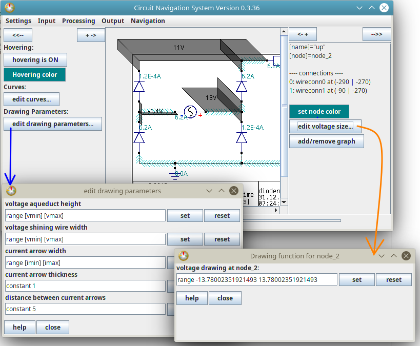

Drawing parameters
Intro
The Animated CAD allows the user to change the drawing parameters for voltages and for currents.
So you can edit...
...how high the aqueducts are for a certain voltage
...how intense wires are "shining" for a certain voltage
...how long/how wide the current drawing arrows are for a certain current
...how thick the current drawing arrows are for a certain current
...how much space is between the current drawing arrows for a certain current.
How to edit drawing parameters:
You can edit drawing parameters for all nodes at once, and you can edit the voltage drawing parameters for one node.
It is recommended to edit the parameters AFTER making an analysis, because when making an analysis, the AniCAD can automaticlly set parameters and it is easier to simply change that than to write that on your own - but in the end, that's up to you.
In the following image, you can see the dialog for editing general parameters at the left, and on the right, the dialog for editing the voltage size of a selected node:

(By default, all nodes in any circuit do not have their own specific drawing parameters. So their drawing parameters are the general ones. But if you, the user, define a specific drawing for a node that you select, then for this specific node, the specific drawing parameters are selected, while all others still use the general drawing parameters.)
Which text to write?
The functions and their parameters are the same as you can choose for curves: